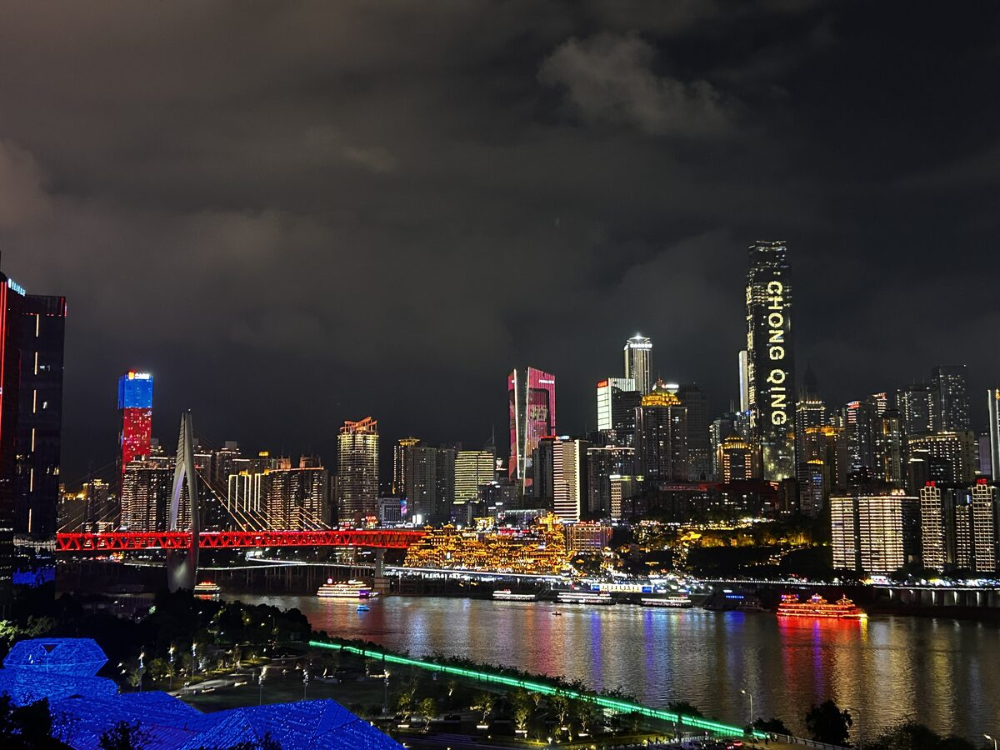
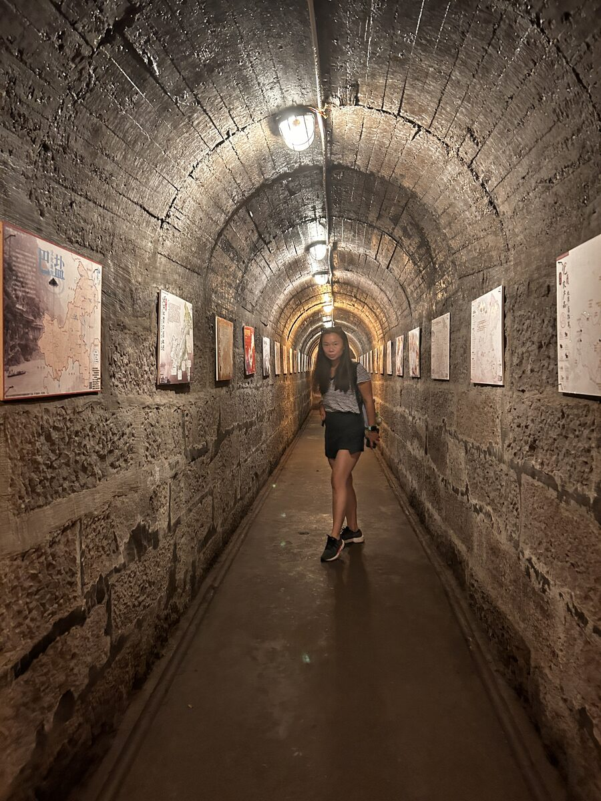

El precio de la libertad
Continuando la serie sobre China
Hay algo en China que me ha acompañado durante todo el viaje.
Una pregunta.
¿Qué significa realmente ser libre?
Como europea, es fácil responder de forma automática. Estamos acostumbrados a asociar la libertad con votar, con expresarnos, con poder criticar a nuestros gobernantes, con elegir qué leemos o qué pensamos.
Y, sin embargo, cuando llegas aquí, descubres que la realidad es mucho más compleja.
China sigue siendo un país gobernado por un único partido. No existe la libertad política tal y como la entendemos nosotros. Hay cámaras de reconocimiento facial por todas partes. Muchas redes sociales están censuradas, los buscadores filtran determinados contenidos y el Estado mantiene un control que, desde fuera, resulta difícil de imaginar.
No voy a negar que eso me impacta.
Me impacta mucho.
Pero al mismo tiempo veo otra realidad.
Veo ciudades limpias. Trenes que llegan puntuales. Hospitales. Infraestructuras impresionantes. Seguridad. Millones de personas que hace apenas unas décadas vivían en una pobreza extrema y que hoy pertenecen a una enorme clase media.

Y entonces me pregunto...
¿Cómo juzgar una realidad que no he vivido?
El miedo se hereda
Hace menos de cincuenta años, gran parte de la población china pasaba hambre. Muchas familias no podían elegir dónde vivir, qué profesión ejercer o cómo construir su propio futuro. La Revolución Cultural terminó hace apenas cuarenta y tantos años. Para un país con miles de años de historia parece mucho tiempo. Para las personas, no es nada.
El miedo deja huella.
Y el miedo también se hereda.
Mientras viajaba fui leyendo sobre aquella época. Sobre profesores enviados al campo para ser "reeducados". Sobre músicos, escritores y poetas obligados a callar. Sobre templos destruidos, libros quemados y generaciones enteras creciendo sin conocer una parte de su propia historia.

Pensaba en todo eso mientras caminaba por templos llenos de incienso y veía a personas rezando en silencio.
Y no podía evitar preguntarme cuánto tarda un pueblo en volver a encontrarse consigo mismo.
Ni en un titular, ni en una noticia de dos minutos
Quizá por eso intento no mirar China desde la superioridad.
No porque esté de acuerdo con todo lo que ocurre aquí.
No lo estoy.
Sino porque siento que la historia de un país no cabe en un titular.
Ni en una noticia de dos minutos.
Ni en una conversación de sobremesa.
Tampoco creo que la libertad sea una palabra tan sencilla como nos gusta pensar.
Porque nosotros tenemos libertad política y, sin embargo, conozco a muchas personas que viven esclavas del miedo, del trabajo, de la opinión de los demás o de unas expectativas que nunca eligieron.
Y aquí he conocido personas que sonríen, cuidan de sus familias, comparten una comida, practican tai chi al amanecer y parecen encontrar paz en una vida que yo, desde fuera, pensaba que solo podía vivirse desde la opresión.
Eso no responde a mi pregunta.
De hecho, hace que sea todavía más grande.
Quizá viajar sirva precisamente para eso.
Para dejar de buscar respuestas fáciles a preguntas difíciles.
Y aceptar que entender un país también implica aceptar que nunca terminaremos de comprenderlo del todo.
Al marcharme de China no siento que tenga una opinión definitiva.
Siento algo mucho más valioso.
Tengo muchas más preguntas de las que tenía cuando llegué.
Y, curiosamente, eso me hace sentir un poco más libre.